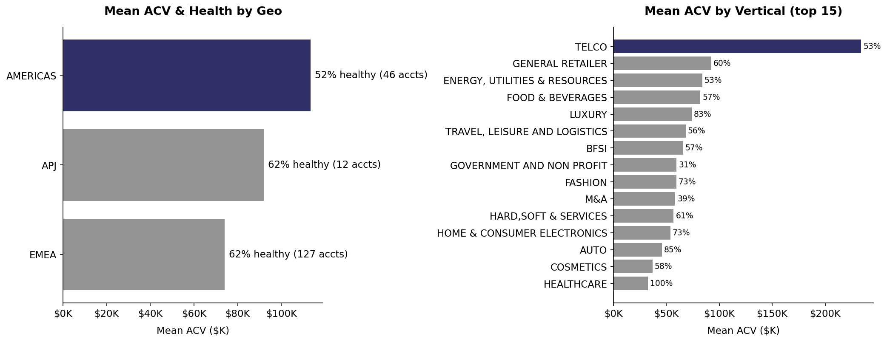
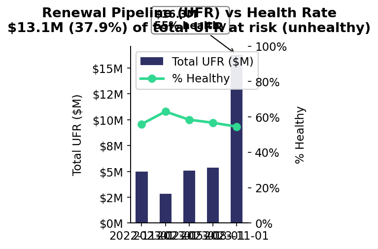
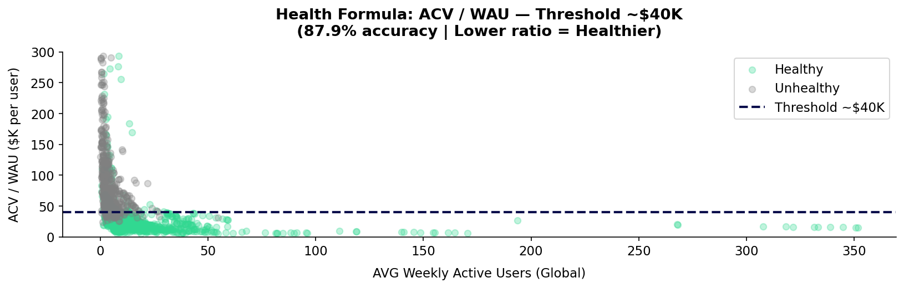
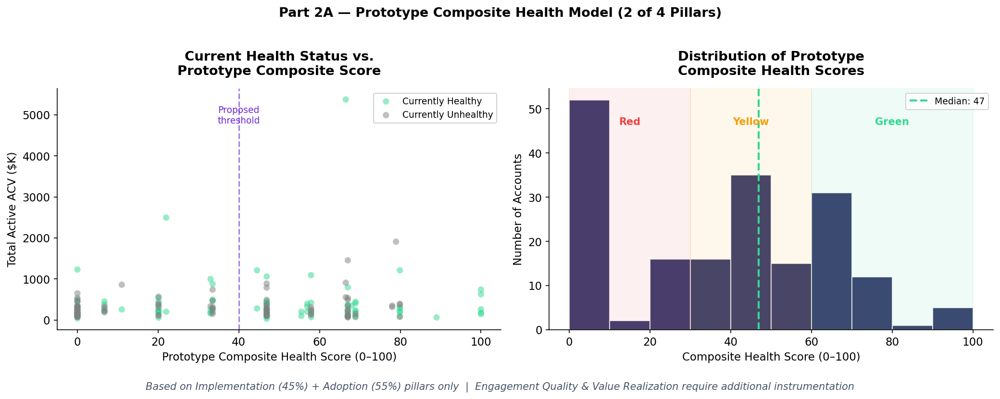

CS Apps should be funded more, conditionally, because growth is strong but adoption and renewal risk require immediate operating fixes.
Direct answer: Increase investment, but tie it to a 6-month delivery and health-reliability plan.
P1 Value Creation
+37%
ACV growth from Jan to Dec 2023 ($11.3M → $15.5M), accounts +30%.
P2 Value Delivery
85%
Accounts not live in production; 71% have zero certified users.
P3 Value Protection
$13.1M
Renewal pipeline tied to unhealthy accounts; health fell from peak ~63% to 54%.
Recommendation logic: Demand exists, but post-sale execution is broken. Investment should prioritize implementation velocity, certification, and health metric redesign before the renewal cliff converts risk into churn.
P1 | Value Creation
Revenue momentum is real, and high-ACV segments show headroom if playbooks improve.
Direct answer to P1: CS Apps is creating value and supports an invest stance on growth fundamentals.
Interpretation: this is not a pure product weakness; it is a go-to-market/playbook execution gap in high-value segments.

P2 | Value Delivery
The growth engine is feeding accounts into a weak onboarding and activation system.
Direct answer to P2: Value delivery is broken and is the primary operational bottleneck.
Implementation Funnel
NULL / Untracked
29%
Implemented
32%
Lived
15%
Only 27 of 185 are currently live.
Certification Gap
0.69
Avg certified users per CS Apps account, vs 18.1 in CS Digital (26x gap).
71.4% of accounts have zero certified CS Apps users.
Engagement Depth
25.7%
Sessions on homepage (navigation), not deep analytics modules.
Module
Avg Sessions/User
Workspace
4.03
Error Analysis
4.36
Zoning Analysis
3.81
Users who reach deep modules show stronger stickiness.
P3 | Value Protection
Renewal exposure is concentrated where account health is weak, and the health metric itself is partially unreliable.
Direct answer to P3: Retention risk is high; current health indicator overstates well-being for non-live accounts.
Health and Renewal Risk
Quarter
UFR
% UFR Healthy
FQ 2022-11-01
$5.0M
57%
FQ 2023-02-01
$2.8M
58%
FQ 2023-05-01
$5.1M
88%
FQ 2023-08-01
$5.4M
62%
FQ 2023-11-01
$16.3M
56%
$13.1M (37.9%) of total UFR is in unhealthy accounts.

Health Formula Issue
Accounts marked "Not started" can still inherit high Digital WAU in AVG_WAU_GLOBAL, lowering ACV/WAU and appearing healthy despite no CS Apps value realization.


Implication: to protect renewals, the metric must use CS Apps-specific adoption and engagement, not blended global usage.
Action Plan + Data Sources
The plan should prioritize adoption mechanics and metric trust before scaling growth spend.
Direct answer: yes, your direction is correct; improve it by making data sources, owners, and sequencing explicit.